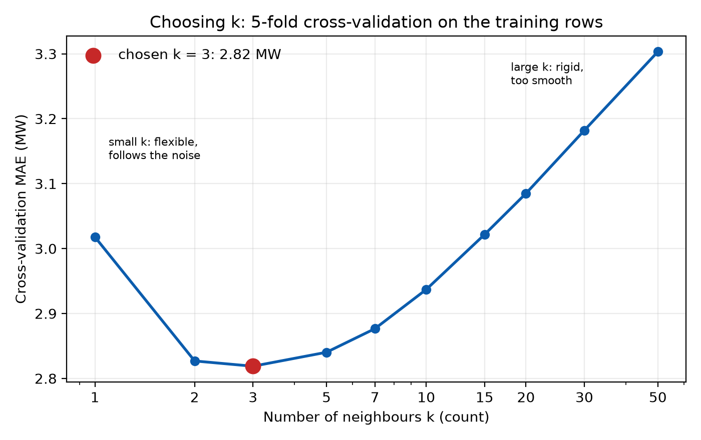
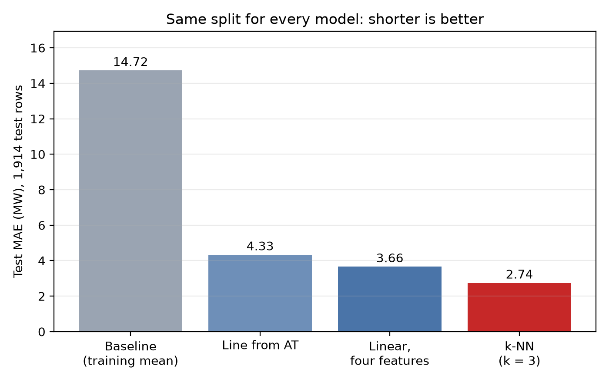
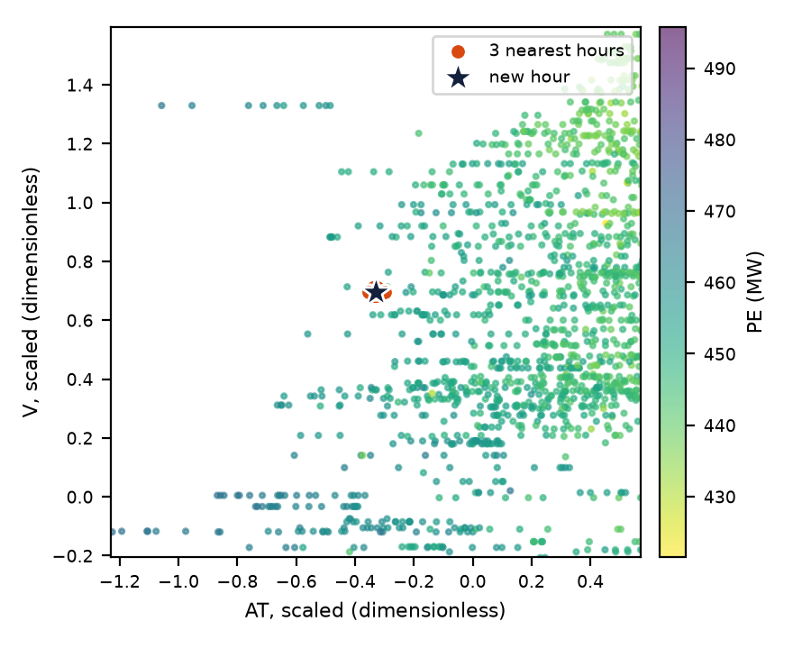

Presentation: k-nearest neighbours
Week 10 method presentation, 4 minutes plus 1 minute of questions.
Slides
knn_presentation.pptx (6 slides, speaker notes included).
Outline
| Part | Content | Time (min) |
|---|---|---|
| Definition | Regression: predicts the plant output PE (MW) from AT, V, AP and RH. | 0.5 |
| How it learns | Training stores the 7,654 training rows. A new hour is predicted as the average PE of its k nearest training hours, after scaling the features with training statistics. | 1.5 |
| Hyperparameters | The number of neighbours k, chosen by 5-fold cross-validation inside the training rows. | 0.5 |
| Result on our data | Test MAE 2.74 MW, against the baseline of 14.72 MW. | 1 |
| Strength and limit | Strength: no assumed shape. Limit: it cannot extrapolate, for example to half load. | 0.5 |
Result on the Week 09 split
Same split for every model: first 7,654 rows for training, last 1,914 rows for testing. k was chosen by cross-validation on the training rows; the test set was used once. Code: knn.py.
| Model | Test MAE (MW) |
|---|---|
| Baseline (training mean) | 14.72 |
| Line from AT | 4.33 |
| Linear, four features | 3.66 |
| k-NN, k = 3 | 2.74 |
The cross-validation error is lowest at k = 3 (2.82 MW); k = 1 gives 3.02 MW and k = 50 gives 3.30 MW.
Figures



The last figure uses 2 of the 4 features, only to draw the neighbours on a plane. Code: plot_neighbours.py.
Sources
- T. Hastie, R. Tibshirani, and J. Friedman, The Elements of Statistical Learning, 2nd ed. New York, NY, USA: Springer, 2009, ch. 13.
- scikit-learn developers, "1.6. Nearest neighbors," scikit-learn user guide. [Online]. Available: scikit-learn.org/stable/modules/neighbors.html
- P. Tüfekci and H. Kaya, "Combined Cycle Power Plant," UCI Machine Learning Repository, 2014, doi:10.24432/C5002N. CC BY 4.0.
AI assistance: see the statement on the Code and statement page.